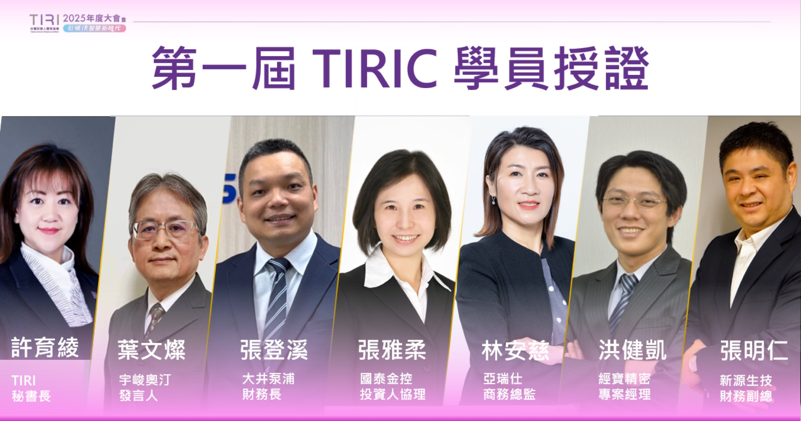
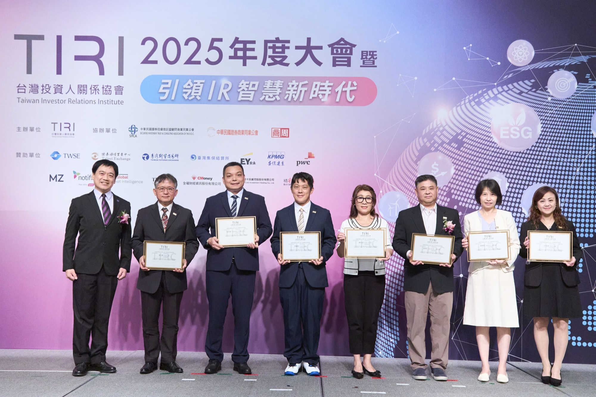
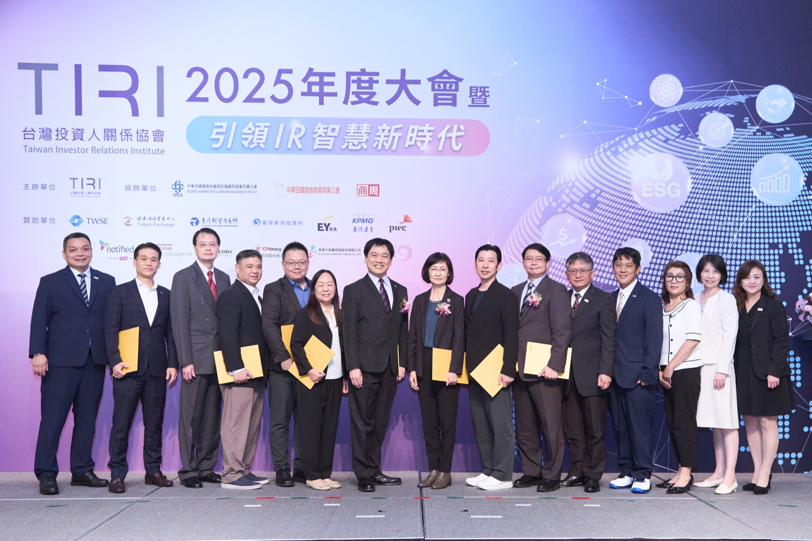
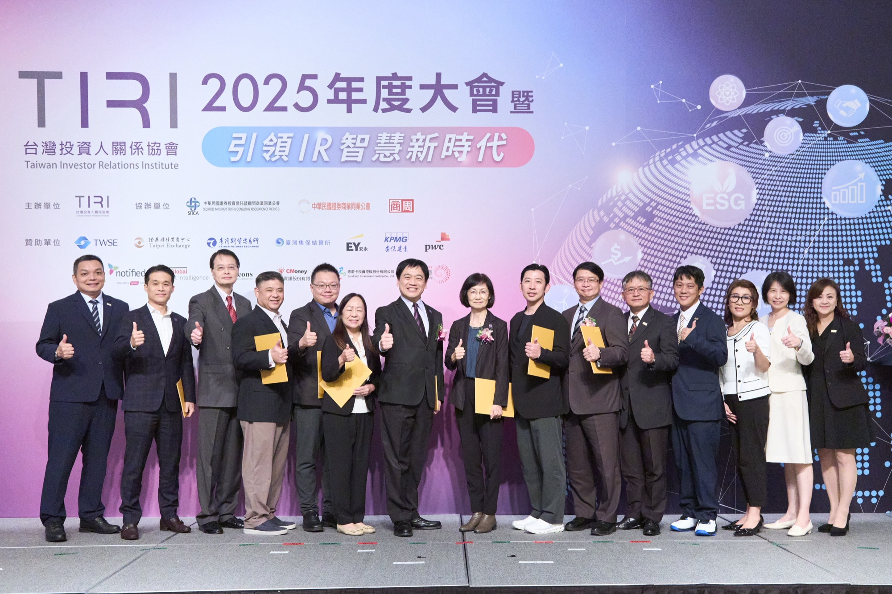
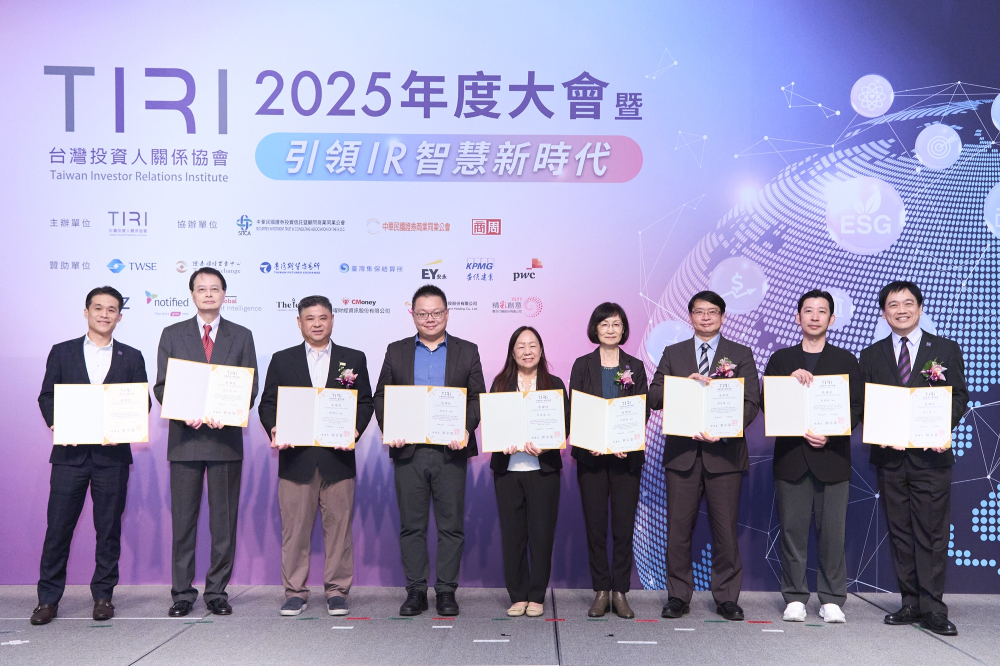
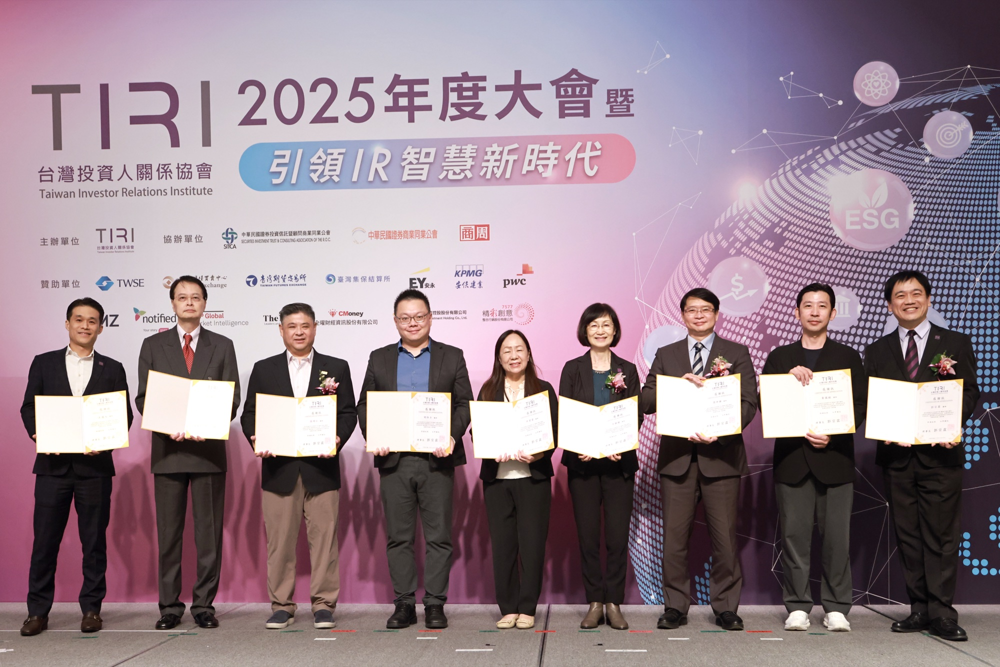

Events & Programs
TIRIC IR 專業實戰班
引領變革，成就頂尖 IR 領袖——結合 NIRI 授權教材與業界實務師資的指標課程。
About
課程簡介
由台灣投資人關係協會（TIRI）規劃之 TIRIC IR 專業實戰班，結合 NIRI 授權教材與業界實務師資，聚焦投資人關係、財務分析、法規遵循、公司治理、永續發展與對外溝通等核心能力，協助學員建立更完整的專業架構與實務判斷。
本課程採用經美國國家投資人關係協會（NIRI）正式授權的經典教材——《Investor Relations Body of Knowledge 第二版》繁體中文版。此中譯版為全球首本經 NIRI 授權之中文版教材，象徵 TIRI 在推動 IR 國際制度化與專業標準接軌方面的突破性里程碑。
透過國際授權教材與在地實務經驗的結合，TIRIC 不僅協助學員掌握 IR 的專業知識體系，更進一步建立面對企業實務場景時所需的分析、整合與溝通能力。
授權儀式於 2025 年 6 月 3 日波士頓 NIRI 年會上正式啟動，由 TIRI 常務理事張明仁代表協會致贈教材予 NIRI，獲國際高度肯定。
Core Values
課程核心價值
Faculty
課程主題與講師
由 10 位資深業界領袖共同授課，協助學員從單一職能走向整合型 IR 專業能力。
2025 Recap
TIRIC 課程回顧
TIRIC 第一屆學員於 2025 TIRI 年度大會完成授證。






2025 TIRI 年度大會授證及頒獎合影
Details
課程詳情